Keep the inspiration.
Paste what you have. Save components on their own. A complete drink can use those components and a preferred coffee preparation without collapsing them into one giant recipe.
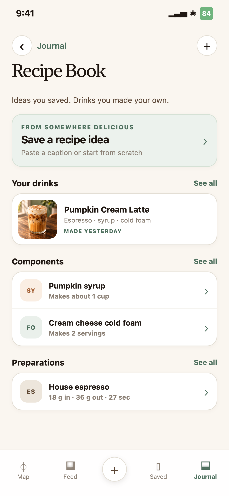
Recipe Book
A home for drinks, components, and preparations.
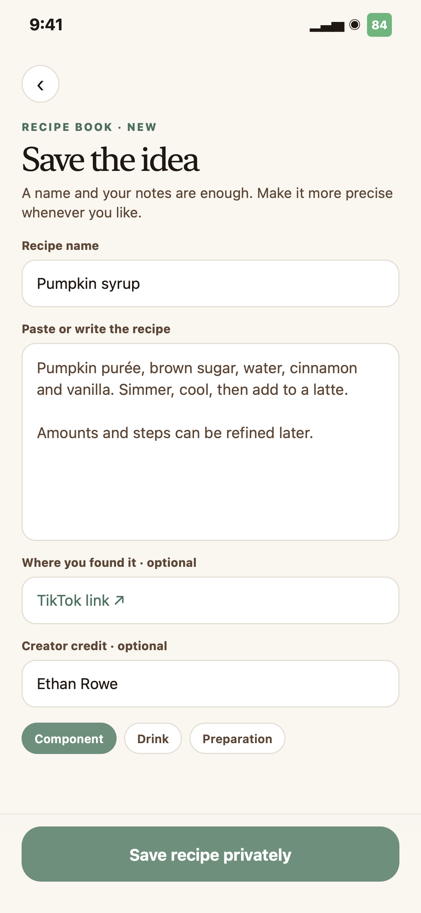
Paste inspiration
A caption, source, or a few notes can start a recipe.
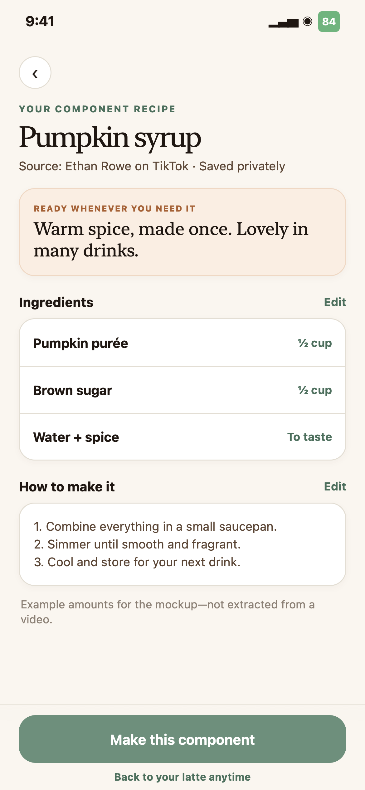
Save a component
Pumpkin syrup remains independently reusable.
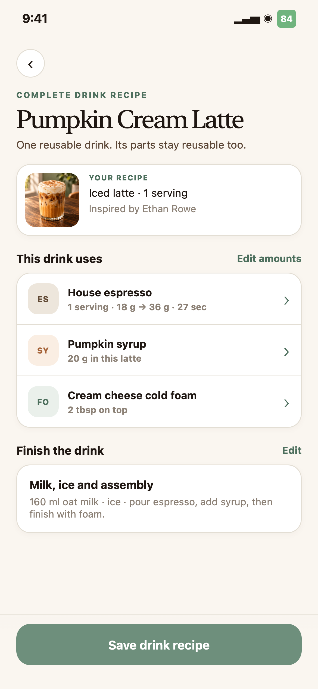
Build the drink
The latte links espresso, syrup, and foam.
Recognize it. Make it.
Choose Latte, then tap your recent Pumpkin Cream Latte. The whole setup appears at a glance. Everything can be changed, but nothing demands an edit before making.
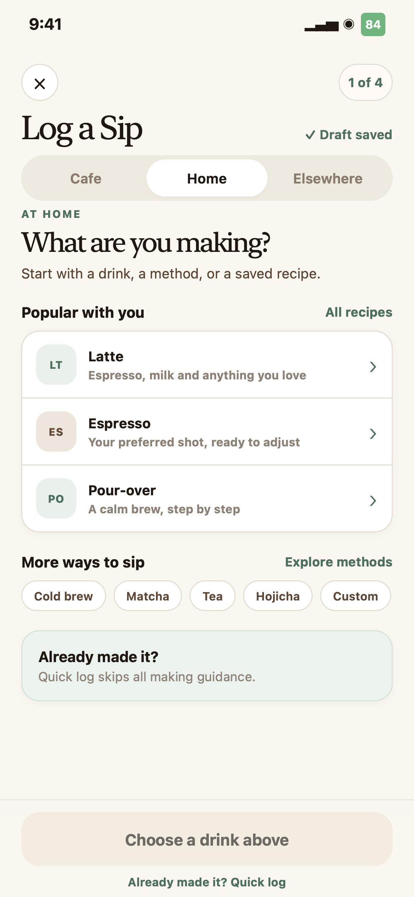
Choose a starting point
Home changes the content under the same Log a Sip header.
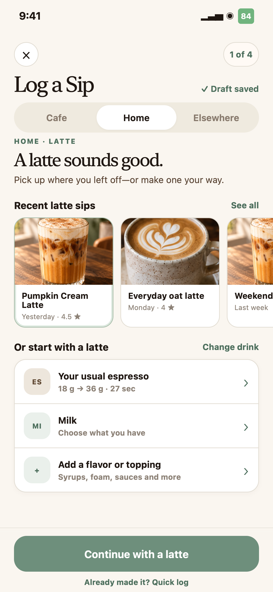
Recent latte shelf
The last Pumpkin Cream Latte is the first easy choice.
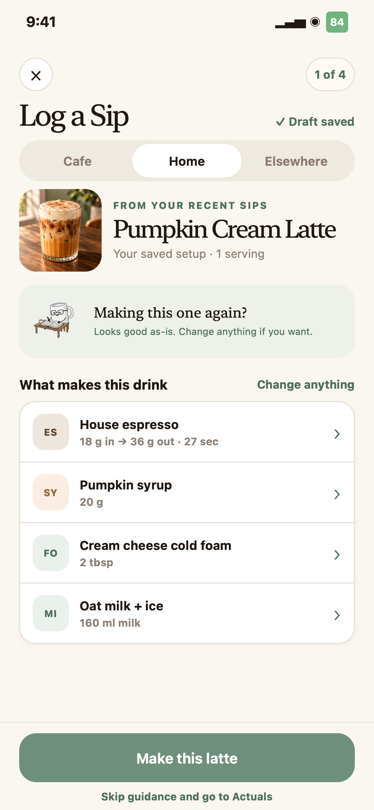
Recognize the setup
All four parts of this drink are visible before Make.
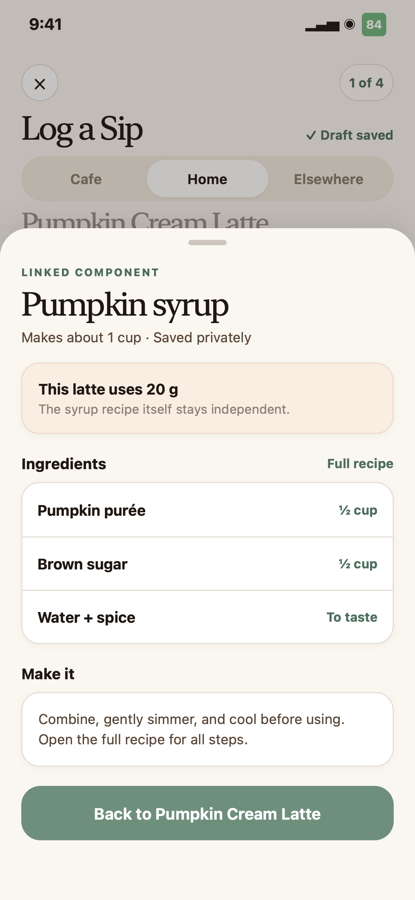
Inspect a component
Open the syrup without losing the parent latte.
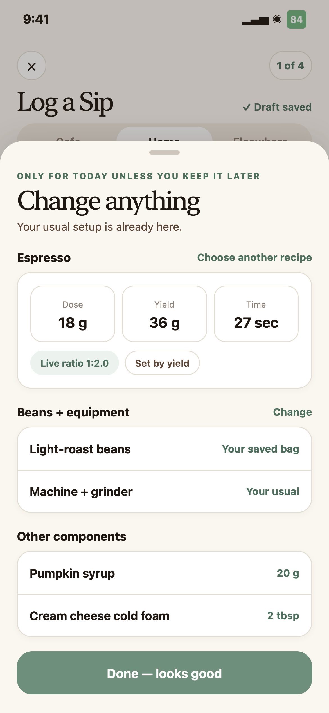
Change anything
Optional controls for beans, ratio, amounts, and parts.
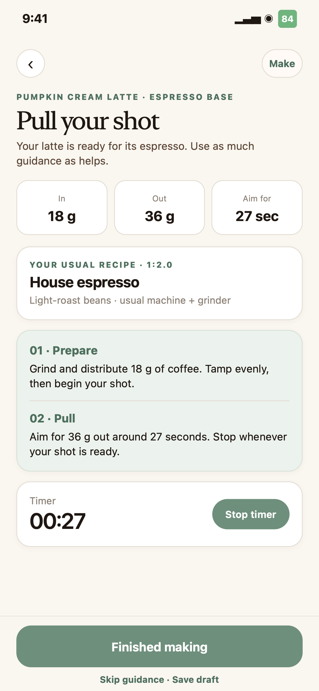
Make the coffee base
A useful espresso timer; guidance stays optional.
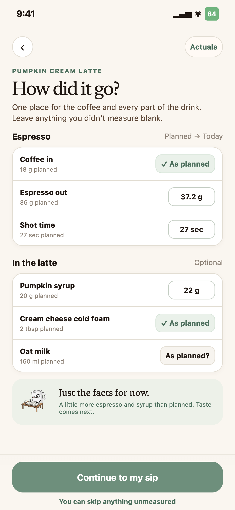
Record what happened
Espresso and ingredient actuals in one place.
Taste it. Keep what worked.
Actuals are optional and never inferred. The Cafe reflection components stay intact. “With a tweak” expands within that same scrolling screen. Review retains its familiar Photos, Caption, Scores & criteria, Audience, Raw note, and Tag people structure.
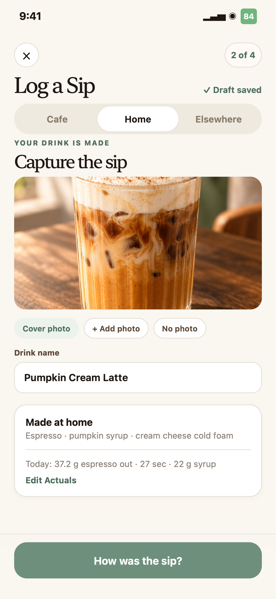
Capture the sip
The familiar photo and drink-name moment.
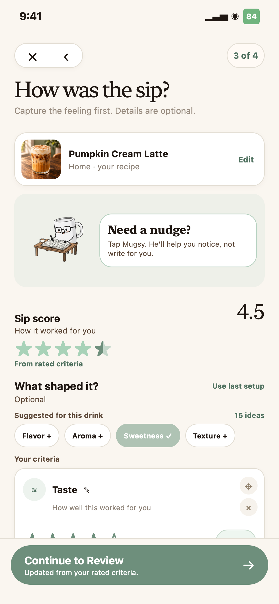
How was the sip?
The Cafe-style Mugsy, score, suggestions, pins, and importance controls.
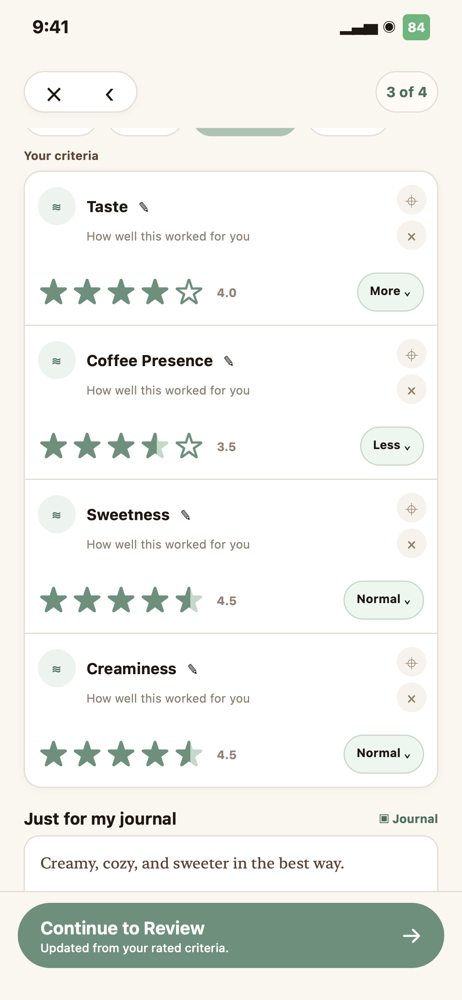
Your criteria
Rated cards keep pinning and More, Less, and Normal importance.
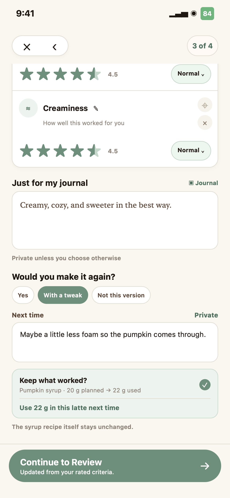
With a tweak
Journal note, next-time note, and “use 22 g” appear inline below make-again.
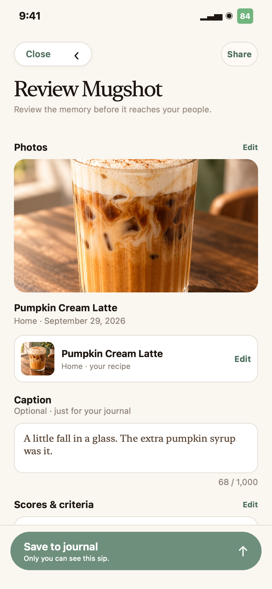
Review Mugshot
Same Photos, identity, Caption, and Scores & criteria order as today.
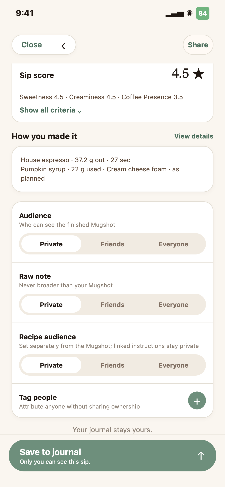
Save privately
The familiar audience and tag controls; Private changes the action to Save to journal.
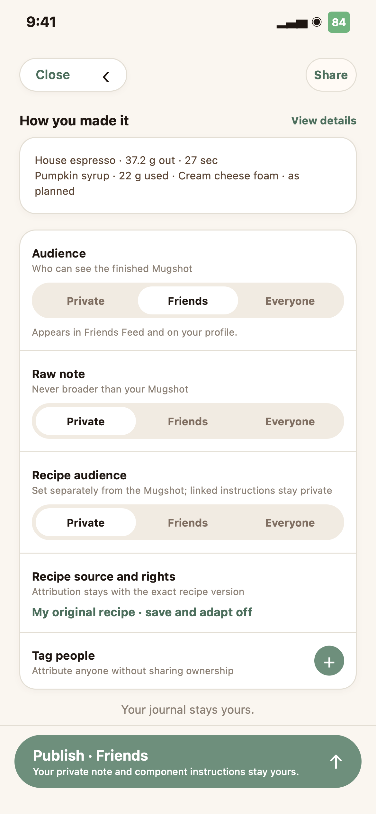
Or publish to friends
The same controls, with Friends selected and a publish action.
Next time is easier.
The Home entry looks and behaves like a real Mugshot. Journal filters Home in place; Recipe Book has a clear doorway. Already made it? Quick log is always there.
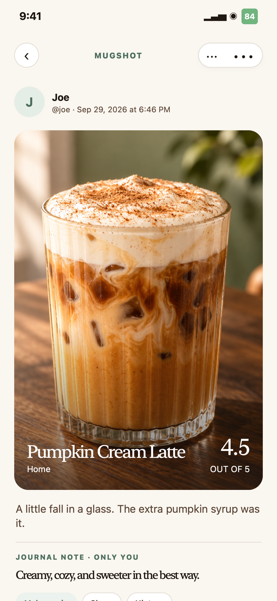
A real Mugshot
Same author, photo hero, title, score, and caption structure as a post.
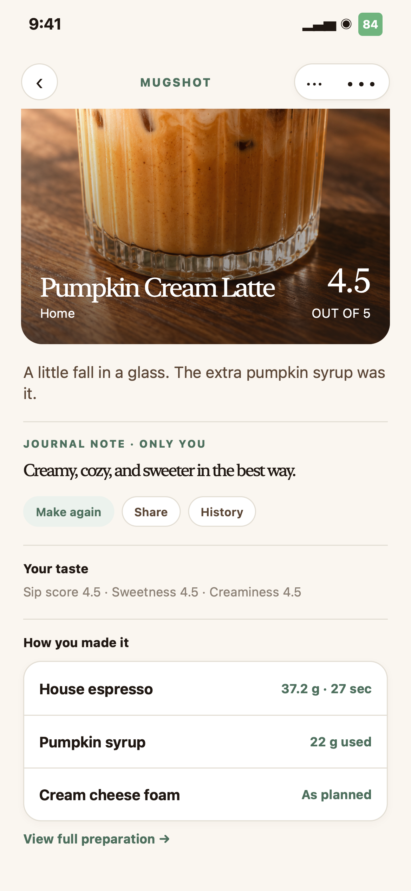
How you made it
Preparation details join the existing post beneath the sip, not in a separate Home card.
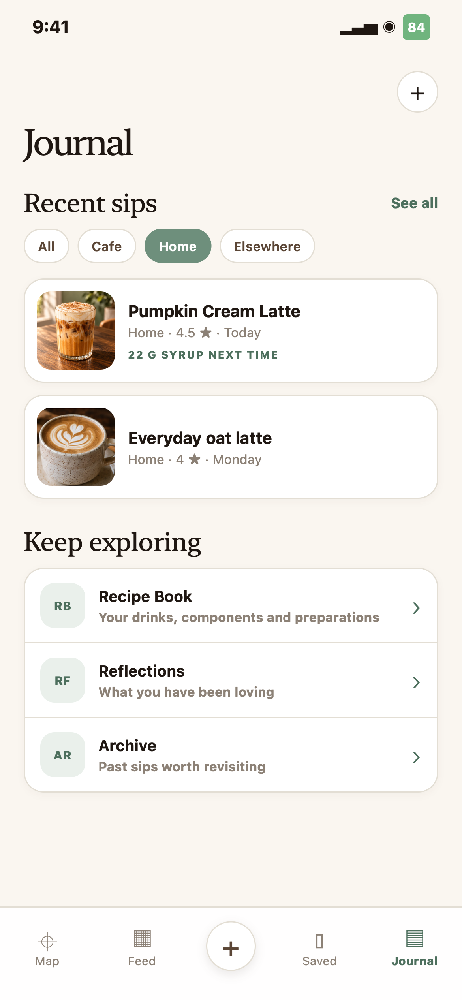
Find it again
Home filter in Journal; Recipe Book in Keep exploring.
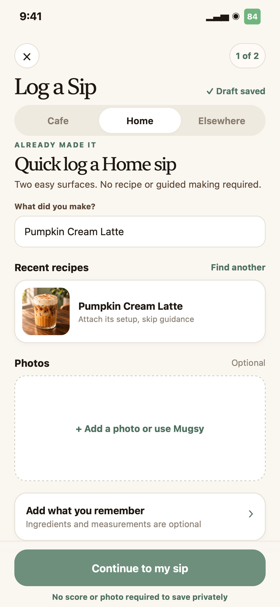
Already made it?
A short, optional-detail path for a finished sip.